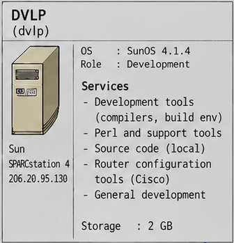

Systems Overview · 1995
DVLP (dvlp)
DVLP era la macchina dove software e configurazione erano preparati prima di avvicinarsi ai server di produzione: l’host Sun di sviluppo, build e operazioni.

images/internetforce_server_map.png (Systems Overview 1995).Identità del sistema
- Hostname
dvlp- Indirizzo
206.20.95.130· LAN dell’ufficio- Piattaforma
- Sun SPARCstation 4
- OS
- SunOS 4.1.4
- Ruolo
- Host di sviluppo/build, staging e operazioni;
loghostcentrale.
Servizi e configurazione
| Servizio / ruolo | Descrizione | Configurazione / evidenza | Documentazione |
|---|---|---|---|
| Host di sviluppo e build | Preparazione e compilazione del software prima della produzione. | descrizione nel README canonico | Sviluppo |
| Compilatori e ambiente di build | Toolchain mantenuta fuori dai server di produzione. | nessuna configurazione recuperata | Sviluppo · Inventario software |
| Perl e strumenti di supporto | Script operativi e di provisioning. | artifacts/scripts/expire.pl · artifacts/scripts/ · artifacts/tools/ | Sviluppo |
| Codice sorgente locale | Area di sviluppo generale su /cisco e dintorni. |
nessun archivio di sorgenti pubblicato | Sviluppo |
| Strumenti di configurazione router | Conservazione delle configurazioni Cisco e procedura per un nuovo POP. | ../pops/CISCO-add_new_pop-HOWTO.txt · ../pops/ | Router e WAN |
| Deployment e modifiche di sistema | Modifiche preparate qui e applicate agli host di produzione. | artifacts/scripts/system.modification-after_OSINSTALLATION.txt | Sviluppo |
Backup su nastro (DAT) e loghost |
Punto operativo dei backup dei sistemi centrali. | BACKUP | Operazioni e backup |
Nota storica
DVLP era l’host Sun di sviluppo/build; la workstation Linux marco serviva a sperimentazione, amministrazione e test. Non faceva parte del flusso operativo una cross-compilazione Linux → SunOS.
Nelle mappe
Documentazione tecnica completa
Apri il README canonico di DVLP
La pagina HTML è una presentazione compatta; il README Markdown è la fonte canonica.